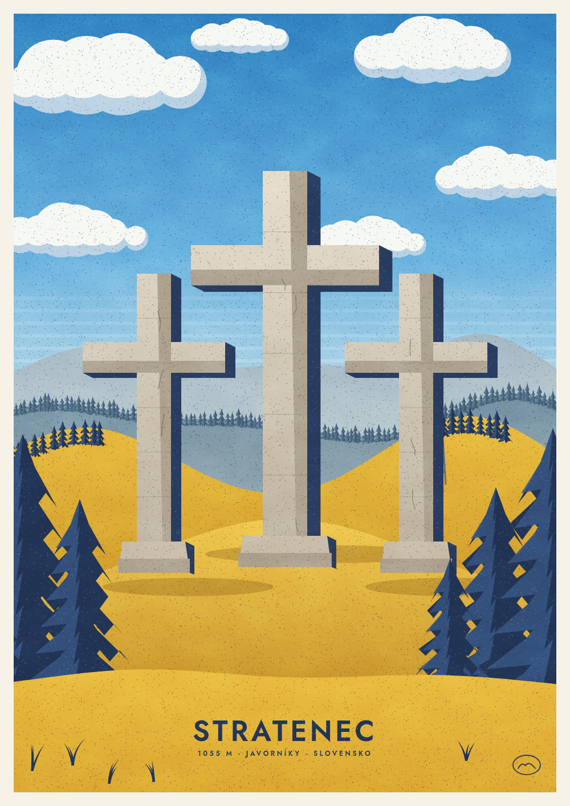
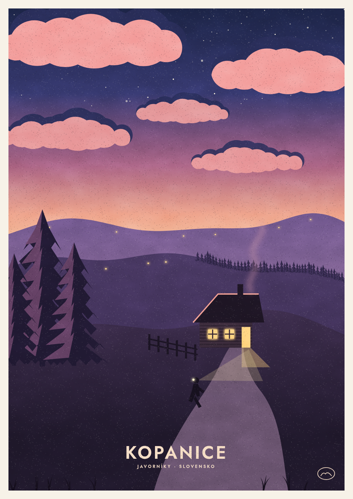
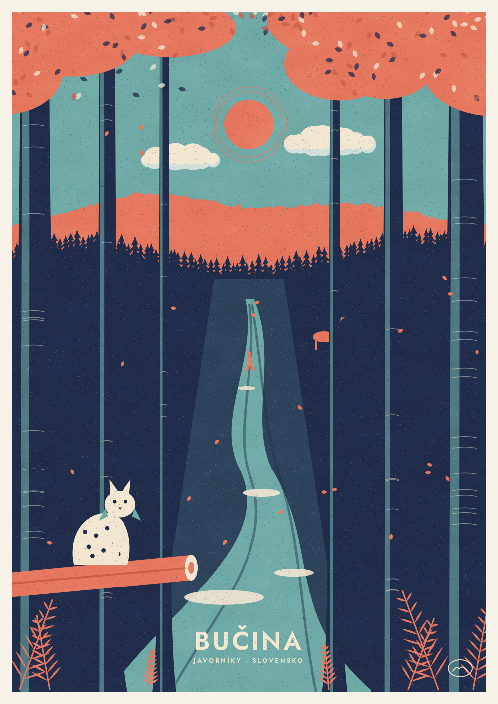
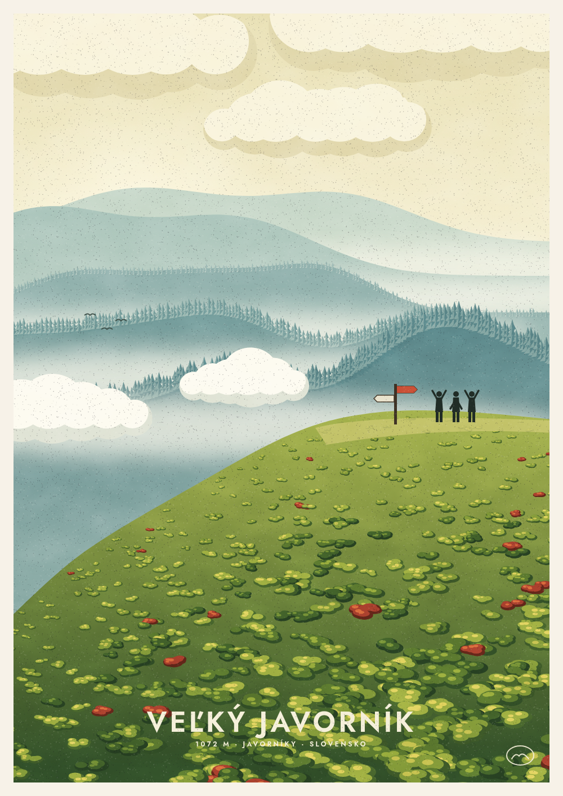
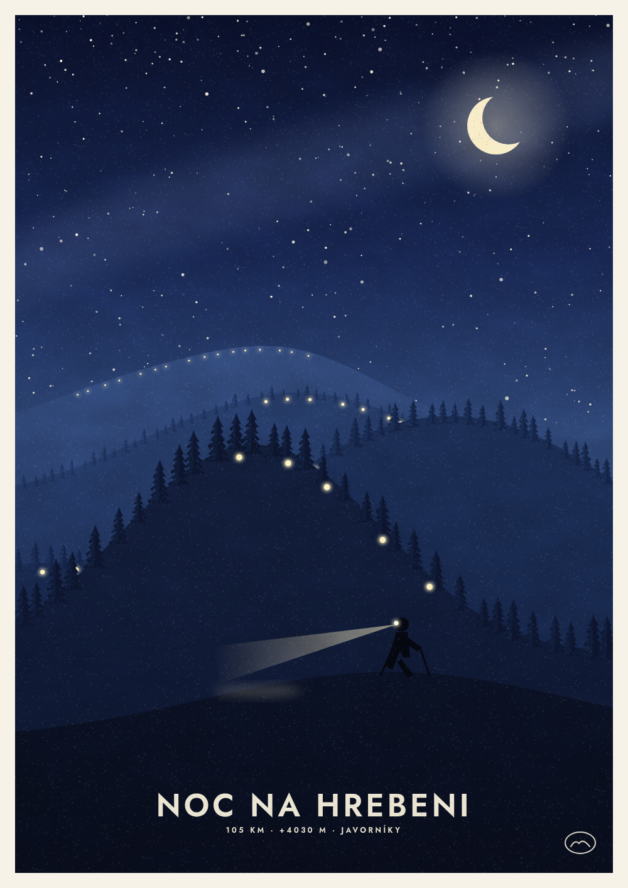
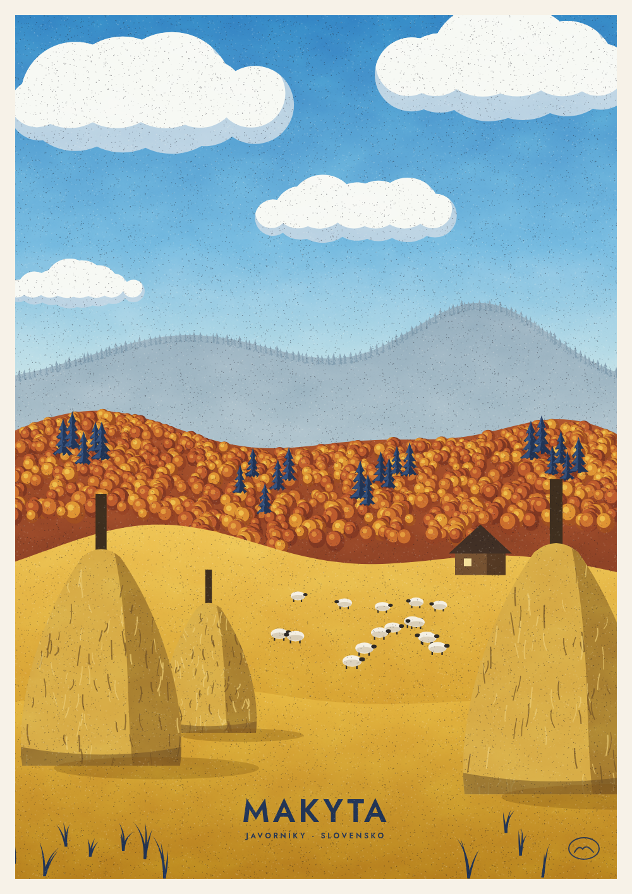

<!doctype html><meta charset="utf-8"><style>body{margin:0;background:#d9cdb5;display:grid;grid-template-columns:repeat(3,1fr);gap:28px;padding:36px;font:13px 'IBM Plex Mono',monospace;color:#2B231A}figure{margin:0}img{width:100%;display:block;box-shadow:0 6px 18px rgba(43,35,26,.25)}figcaption{margin-top:8px;letter-spacing:1px}</style>
<figure><figcaption>07 · Stratenec</figcaption></figure>
<figure><figcaption>08 · Kopanice (súmrak)</figcaption></figure>
<figure><figcaption>09 · Bučina</figcaption></figure>
<figure><figcaption>10 · Veľký Javorník</figcaption></figure>
<figure><figcaption>11 · Noc na hrebeni</figcaption></figure>
<figure><figcaption>12 · Makyta</figcaption></figure>
